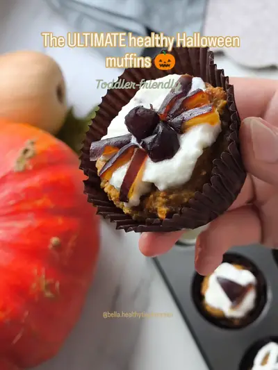

Healthy Halloween Pumpkin Muffins for Toddlers

Ingredients
- greek yogurt
- pumpkin
Steps
- Did you know if you make pumpkin puree, applesauce, blended dates, and a few basics, then bake at 180 degrees Celsius, you get the ultimate healthy Halloween muffin.
- Add a swirl of Greek yogurt and decorate with fighters, which had poor monster eye, boogie, fun, and perfect for busy mums who want Halloween snacks without the sugar crap.
From the video's narration and on-screen text, by @toddler.snack.therapy on TikTok. Open original